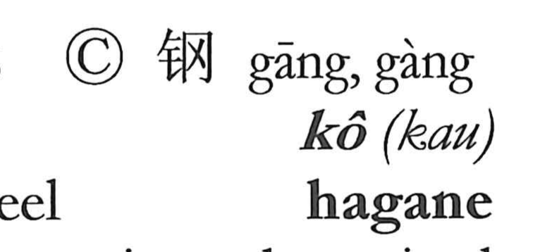

鋼

Kun: hagane | On: kou
steel ・ tempered steel
Explanation
鋼 is a phono-semantic character: the metal sign on the left marks the domain of metal, while 岡 supplies the sound kō and points to the image behind the word. Shirakawa reads 岡 as the clay mold used in casting—earth packed and fired by heat rising from below until it hardens into a rigid shell. In 剛, where 岡 appears with a knife, the scene is of cutting the mold away, hence the sense of something tough and not easily torn off. With 金 + 岡, 鋼 names iron that has been refined and hardened: tempered, high-quality steel.